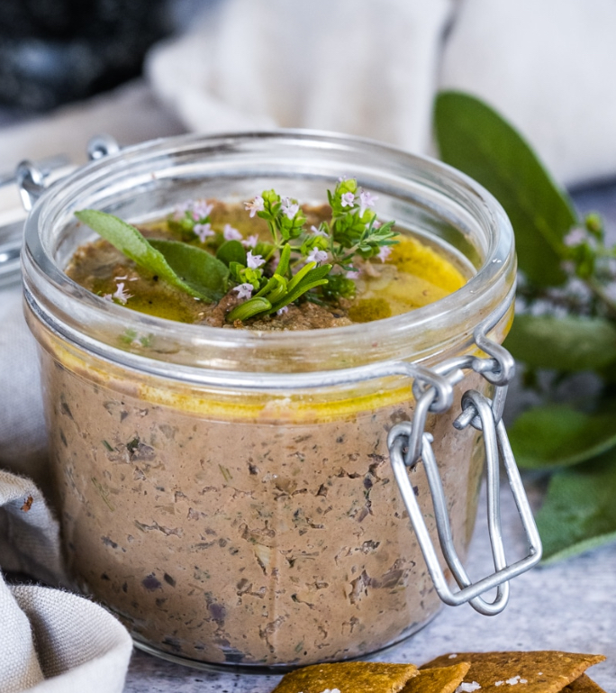

Pâté

Description
After some failed experiments, my husband is convinced that the benefits of adding beef liver to our regular home
menu finally outweigh the cons. Why? Because of this recipe by Claudia Curici which
creates a
delicious flavor and a pleasing texture--a feat difficult to achieve with offal.
While this pâté is tasty on baguettes and crackers of all shapes and sizes, we've also found that using this
as a condiment on burgers and sandwiches is also quite the treat.
Still not convinced to eat a cow organ? If you're like me, and your head needs convincing before your stomach
will follow, feel free to read these
to get your appetite going:
Ingredients
- 3 tablespoons extra virgin olive oil (for the pan)
- 1 lb/400 grams 100% grass-fed beef liver
- 3 medium red onions, chopped or sliced
- 3 garlic cloves, smashed
- 3 tablespoons of mixed fresh herbs: sage, rosemary, oregano, thyme
- 1/2 teaspoon freshly ground pepper
- 1/2 teaspoon allspice
- 2 teaspoons salt (add gradually and taste)
- 2 tablespoons extra virgin olive oil (to add to the pate when processing)
- 1 tablespoon soft ghee
Steps
- Rinse the liver in cold water and pat dry. If your butcher didn't do it already, ensure all the membranes
are removed, and the liver is sliced in approximately equal pieces so it cooks evenly.
- Wash and dry the herbs, and prepare all the rest of the ingredients.
- Heat a large skillet on medium heat, add the onions and sauté until fragrant and translucent, for about 5
minutes.
- Add the smashed and chopped garlic, stir well and cook for one more minute.
- Add the liver, chopped herbs, pepper, and allspice (DO NOT add salt while the liver is cooking!).
- Cook on one side for about 2 minutes, flip, and cook for about 2 more minutes. The time will depend on the
thickness of the pieces, but you have to make sure you don't overcook the liver, as it will become bitter,
plus you will kill some of the nutrients. To check doneness, cut one of the thicker pieces and see if it's
still raw in the middle. You don't want it to look raw, but you want to retain some pink and softness. If
there are thinner pieces that are ready, take them out on a cutting board and continue to cook the pieces
that are thicker and still raw in the middle. It's not going to take long, so don't leave the stove.
- Take all the cooked liver out on a cutting board, chop it into smaller pieces and add to the food processor,
together with all the onions and spices from the pan, 2 tablespoons of olive oil, and salt. Add first 1
teaspoon salt, and add more after you taste. For my taste, I add up to 2 teaspoons of sea salt flakes. Some
salt is more powerful, that's why is better to add it gradually.
- Process until it reaches the desired consistency. Taste and add more salt if necessary.
Notes
- Choose the right liver. In the case of beef, you only want to buy liver that is 100%
grass-fed (grass-fed, grass-finished). Find a good source where you can get small quantities of fresh liver.
- Clean the liver properly. No, you don’t have to soak liver in milk if you have good quality
liver. Ideally, your butcher will clean the liver and slice it for you, but if that’s not the case, make
sure you remove all the membranes. Those parts will be tough to chew and will give the final product that
specific strong taste no one likes and bitterness. Then wash in cold water, drain and pat dry. The pieces of
the liver should be approximately the same size and thickness so they cook evenly. If that’s not possible,
you can take out the thinner pieces that are cooked and continue to cook the rest.
- Don't overcook the liver. I can’t stress how important that is. Not only will overcooked
liver have fewer nutrients, but it will be bitter and tough. And that’s exactly what turns beef liver
unappetizing.
- Use a ton of fresh herbs. They will add nutritional value, will help neutralize histamines
in the liver, and will make the liver pate delicious. They also help with storage, prolonging the pate’s
life.
- Use a lot of onions. Beef liver and onions are a perfect match (any liver, for that
matter). Onions give liver pate its sweetness and will overpower the specific strong taste of the liver
(along with the herbs and garlic).
- Don't add salt when cooking liver. Adding salt before the liver is fully cooked will make
it bitter. Only add the salt after you transferred everything to the food processor.
- Add some spice. While nutmeg is often used for making liver pate, I prefer allspice. It
will bring a subtle flavor and neutralize further the taste you don’t like.
- Add some bourbon. That’s not included in the recipe card below, but if you want to go one
step further, add a shot of good quality bourbon when the liver is almost fully cooked.
Recipe Credit
Though this recipe has not been modifiied, the original recipe posting can be found here.